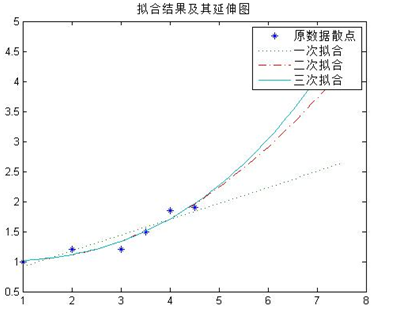

手机芯片发展过程与趋势分析
一、 高通在手机芯片市场上纵横驰骋已经很多年了，受益于“买基带送处理器”的大量通信专利掌控，高通一直都处于市场霸主的地位。随着市场竞争的加剧，很多移动芯片品牌逐渐被挤出了市场，比如雄心壮志的intel、当年红极一时的德州仪器，而高通却一直活得很好，这其中除了垄断性地位的因素，性能强、兼容性好也 是不容忽视的优势。
高通骁龙处理器性能参数如下：
名称 |
高通骁龙200 |
高通骁龙400 |
高通骁龙600 |
高通骁龙800 |
高通骁龙801 |
高通骁龙805 |
核心数 |
4 |
2 |
4 |
4 |
4 |
4 |
频率 |
1.3 |
1.7 |
1.9 |
2.0 |
2.3 |
2.5 |
跑分 |
12334 |
23579 |
28785 |
41384 |
45348 |
48364 |
代数 |
1 |
2 |
3 |
3.5 |
4 |
4.5 |
由MATLAB对以上数据进行处理得到如下结果：
1.高通晓龙芯片频率变化趋势：
| 折线图： | 拟合曲线： |
2.高通晓龙芯片跑分变化趋势：
| 折线图： | 拟合曲线： |
说明：以上图中横坐标代表高通处理器的代数，纵坐标表示其跑分值。
总结：通过MATLAB的数据处理我们不难看出高通处理器的频率每一代较之上一代都有较大幅度的提升，其中在4代到4.5代间提升较前面更加显著。由曲线拟合结果来看，考虑到实际科技的发展速度，未来处理器频率的提升会更加快速。频率拟合曲线：一次为：二次为：三次为：由此计算出第5代处理器频率为（一次）（二次）（三次）平均值为：。；另外跑分的变化趋势也是上升的，从拟合结果来看，3种拟合的曲线差别不大，大致服从一阶曲线变化。跑分拟合曲线：一次为：二次为：三次为：由此计算出第5代处理器跑分为（一次）（二次）（三次）平均值为：。
二、在手机产品行业里如果说高通、三星、NVIDIA这些芯片公司都是高富帅，那么一直与山寨相生相伴的联发科（联发科）就是X丝级别的存在。然而只要够努力，逆袭之日终会到来，如今的联发科就为大家讲述了这样一个励志的故事。
联发科处理器参数如下：
名称 |
MT6575 |
MT6577 |
MT6582 |
MT6589T |
MT6592 |
MT6595 |
核心数 |
1 |
2 |
4 |
4 |
8 |
8 |
频率 |
1.0 |
1.2 |
1.2 |
1.5 |
1.7+2.0 |
1.7+2.1 |
跑分 |
8522 |
9186 |
10782 |
16591 |
28737 |
41295 |
代数 |
1 |
2 |
3 |
3.5 |
4 |
4.5 |
由MATLAB对以上数据进行处理得到如下结果：
1.联发科芯片频率变化趋势：
| 折线图： | 拟合曲线： |
2.联发科芯片跑分变化趋势：
| 折线图： | 拟合曲线： |
|  |
说明：以上图中横坐标代表联发科处理器的代数，纵坐标表示其跑分值。
总结：通过MATLAB的数据处理我们不难看出联发科处理器的频率每一代较之上一代都有较大幅度的提升，其变化趋势比高通处理器更快。由于联发科是从低端芯片起家，图中的呈凹函数变化的曲线就反映了其发展特点，加速度越来越大。频率拟合曲线：一次为：二次为：三次为：由此计算出第5代处理器频率为（一次）（二次）（三次）平均值为：。跑分拟合曲线：一次为：二次为：三次为：由此计算出第5代处理器跑分为（一次）（二次）（三次）平均值为：。